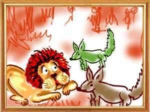

Two sparrows, husband and wife, built a nest on a banyan tree where the female sparrow laid eggs. One afternoon a wild elephant came to the tree seeking shelter from the sun. Unable to bear the heat, the tusker suddenly went berserk and snapped a big branch of the tree, crushing the sparrow's eggs in the nest. The sparrow pair somehow escaped the fury of the elephant but the wife began crying for her eggs. A woodpecker, a close friend of the sparrow, heard her crying and moved by her grief asked her, “Why are you crying, my friend? Wise men do not grieve what is lost or what is dead or what is past. That is the difference between a learned person and an unlettered man.”
The female sparrow said, “The wicked elephant has destroyed my off spring. If you are a true friend of mine suggest a way to kill him. In my view, he who harms a person in trouble or he who ridicules a person in sorrow deserves to be punished and he who punishes such a person has no rebirth.” “What you say is right,” said the woodpecker. “He is a friend who comes to your aid when you are in need. Everyone tries to be friendly when you are prospering. You will see how resourceful I am. I have a friend who is a fly. With his help we can kill the elephant.”
Taking the female sparrow with him, the woodpecker called on the fly and told him, “This is my dearest friend. A wild elephant has squashed her eggs. You must somehow find a way to kill that elephant. We need your help.” The fly said, “I have a friend who is a frog. Let us go to him and seek his help also.” The female sparrow, the woodpecker and the fly went to the frog and narrated the entire story of the sparrow's grief.
The frog said, “What is an elephant before a united crowd like us? Do as I tell you. O' fly, go to the elephant when the sun is high in the sky and hum a sweet tune into his ears. When he closes his eyes in ecstasy, the woodpecker will scoop his eyes out. He becomes blind and thirsty and will look for water. I will go to a quicksand and begin croaking there. Thinking that there is water, the elephant will come there and sink into the quicksand and die.” All the four played out their roles according to the frog's plan and caused the death of the elephant.” At the end of the story, the female pheasant told her husband, “That is how together the four friends killed the elephant.”
Impressed by his wife's wisdom, the husband said, “Okay, we will call our friends and with their help crush the Sea.' As their friends, the cranes, the peacocks, the cuckoos and other birds, gathered, the male pheasant told them the story of how the Sea had killed their offspring and how necessary it was to drain him out. At the end, he said, “We cannot do this job. Let us go to Garuda, Lord Vishnu's vehicle, and tell him all that has happened. He will be angry over what the Sea has done to his species. He will surely take revenge on the Sea.” Wailing and weeping, all the birds went to meet Garuda and told him, “O lord, we need your help. The Sea has destroyed the eggs of the pheasant pair. This is a blow to all the bird community. If you do not intervene, he will destroy our entire tribe. Wise men have always said that one wicked person will be an inspiration to all others with evil intentions.”
The wolf then looked at the jackal suggesting that the jackal should convince the lion of his innocence. But the cunning jackal said, “You did not heed my warning and ate the meat. Why do you now expect me to help you?' Realizing the danger, the wolf fled the scene to save his life. Meanwhile, a caravan of camels passing by stopped where the lion and the jackal were planning the next move. The lead camel had a big bell tied to his neck. Frightened by the sound of the bell, the lion asked the jackal to find out what the sound was all about. He had not heard such sounds in his life. Pretending to find out, the jackal went out of the lion's sight and shouted from there, “O lord, run for your life." “What's the matter,” the lion asked him. “Why are you frightening me? Let me know clearly what's happening.”
The jackal said, “My lord, the Lord of Death is angry that you have killed the camel before its death was due. He is upset and vowed that he would get from you one thousand times more than the value of the camel we have killed. It is the Lord of Death who hung a bell in the lead camel's neck. He also brought with him all the ancestors of the camel.” The jackal thus tricked the lion into hurriedly fleeing the place, leaving the camel's body all to himself to feast upon.